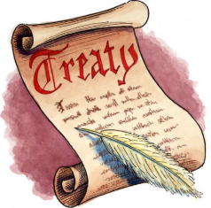

The economy of Peru is an emerging, mixed economy characterized by a high level of foreign trade and an upper middle income economy as classified by the World Bank. Peru has the forty-seventh largest economy in the world by total GDP and currently experiences a high human development index. The country was one of the world's fastest-growing economies in 2012, with a GDP growth rate of 6.3%.
The economy was expected to increase 9.3% in 2021, in a rebound from the COVID-19 pandemic in Peru.
Trade partners / Treaties.
Peru has signed a number of free trade agreements with its main trade partners.
China became the nation's largest trading partner following the China-Peru Free Trade Agreement signed on 28 April 2009. Additional free trade agreements have been signed with the United States in 2006, Japan in 2011 and the European Union in 2012.
Trade and industry are centralized in Lima while agricultural exports have led to regional development within the nation.

Exports
The country's economy is heavily dependent on commodity exports, particularly in the mining sector, which is the backbone of the economy.
Peru's economy is also influenced by its strategic geographical position and abundant mineral reserves, making it a significant player in the global market.
Peru's main exports are copper, gold, zinc, textiles, chemicals, pharmaceuticals, manufactures, machinery, services and fish meal